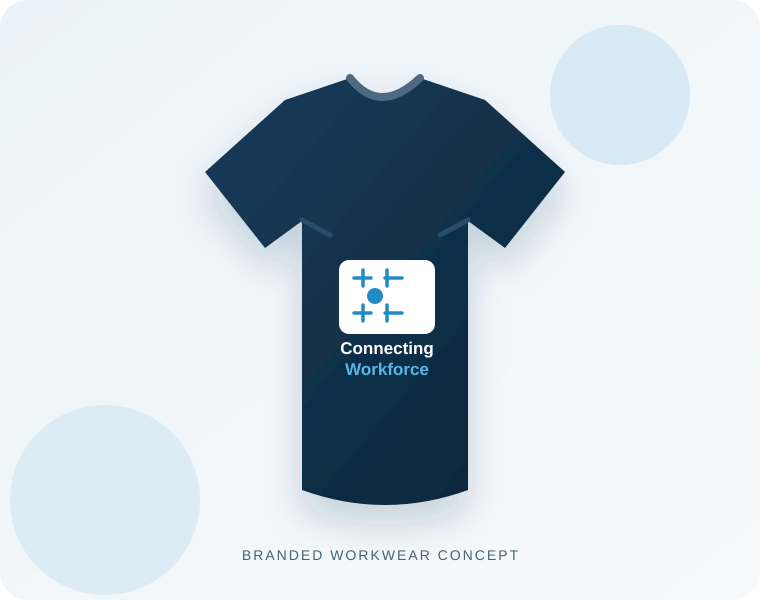

01 / WORKPLACE SERVICES
Cleaning services
Office and workplace cleaning, plus car cleaning. Specialist or larger-site work is considered only where appropriate arrangements are confirmed.
Explore cleaning →PEOPLE · BUSINESS · OPPORTUNITY
We bring job seekers, employers and practical services together to help people take their next step and businesses get the support they need.

OUR PURPOSE
Connecting Workforce is an independent business bringing workforce information and practical commercial services together with a clear, partnership-led approach.
OUR SERVICES
We listen first, agree the scope and explain whether work is delivered directly or through a suitable partner.
Office and workplace cleaning, plus car cleaning. Specialist or larger-site work is considered only where appropriate arrangements are confirmed.
Explore cleaning →
Device wiping, testing, grading, packaging and return or shipping coordination for business laptops and mobile phones.
Explore device services →
Work clothing, safety footwear, PPE and practical workplace essentials for individuals and businesses.
Explore workwear →
Logo printing, embroidery and workwear branding, coordinated around artwork, garment and quantity requirements.
Explore company printing →WORKFORCE & EMPLOYERS
Explore job information and work-readiness resources, or start a conversation about your workforce needs.

MAKE THE NEXT CONNECTION
Whether you are looking for work, representing an employer or seeking a practical business service, we will help clarify the next step and any relevant partner involvement.
HOW WE WORK
We begin by understanding the requirement, intended outcome and practical constraints.
We clarify scope, timing, pricing and whether delivery is direct or partner-supported before work begins.
We help people, employers and service providers identify a practical next step without promising outcomes we cannot control.